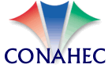
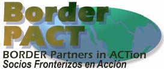
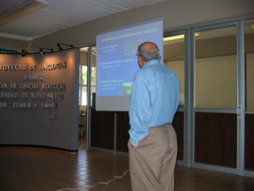
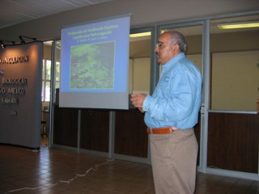
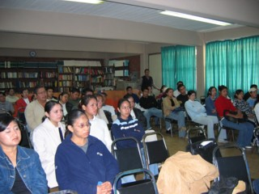
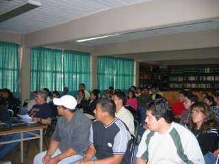
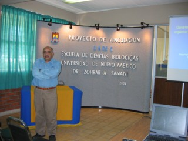
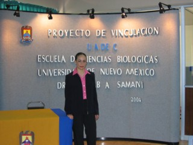
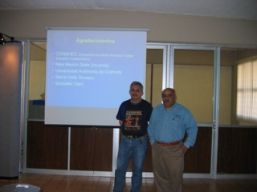
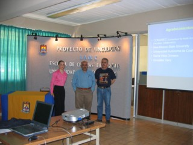

International Projects
Research > Remote sensing | Energy | Water management | flow measurement | Evapotranspiration | International projects|
International Projects
- CONAHEC (US-Mexico Collaboration Project)
- Slides Presentation 1
- Slide Presentation 2
- Tajikstan
|  |  |
Evaluation of technical and ecomomic feasibilities for the energy and compost production from dairy manure waste in Coahuila Mexico
Project summaryThe New Mexico Dairy Industry comprises of 320,000 milk cows. The dairy industry is the number one cash producing industry in the State of New Mexico, but it is also a source of environmental concern due to the large amount of animal manure waste that is being generated. The faculty at New Mexico State University (Las Cruces, New Mexico) has been working ton technologies to convert the manure waste into energy (methane) and compost. The technology has proven to be feasible and cost effective. The climate of New Mexico is similar to the one on the State of Coahuila in Mexico. The state of Coahuila, particularly the area known as :La Laguna: is also a major dairy producer in the country. The dairy industry in Torreon, Coahuila is also generating a significant amount of cattle manure which has been estimated to be more than one million tons per year (El Siglo de Torreon, February 2004). This waste has potential adverse environmental impact due to uncontrolled methane emissions and contamination of air, water, and soil. Traditionally, manure is applied to agricultural lands as soil amendment, but due to the high cost of transportation and limited water supplies in New Mexico and Coahuila, the land application of manure is not economical. An alternative manure management approach would be to convert the waste into energy (methane) and a compost like byproduct which can be used in agriculture as well as green house industry. An anaerobic digestion (AD) system has been constructed at New Mexico State University and is being utilized to produce energy and a valuable residual from agricultural and domestic waste, including food wastes, cotton gin waste, and paper. Currently, come research is being conducted to generate energy and compost using cattle manure only. Preliminary results show that the residual has a significant higher nitrogen content, which the process requires a lower amount of water and processing time is less when compared to traditional aerobic composting processes.
Mid-term report file - Submitted to Consortium for North American Higher Education Collaboration (CONAHEC), December 2004.
Final report
Collaboration
The project is a joint collaboration between New Mexico State University and Universidad Autonoma de Coahuila.
First Joint NMSU-UAC Conference on CONAHEC project (Aug. 2004, Torreon, Mexico)|  |  |
|  |  |
|  |  |
|  |  |
|
Working with farmers in Tajikstan |
|

(c) Zohrab A. Samani